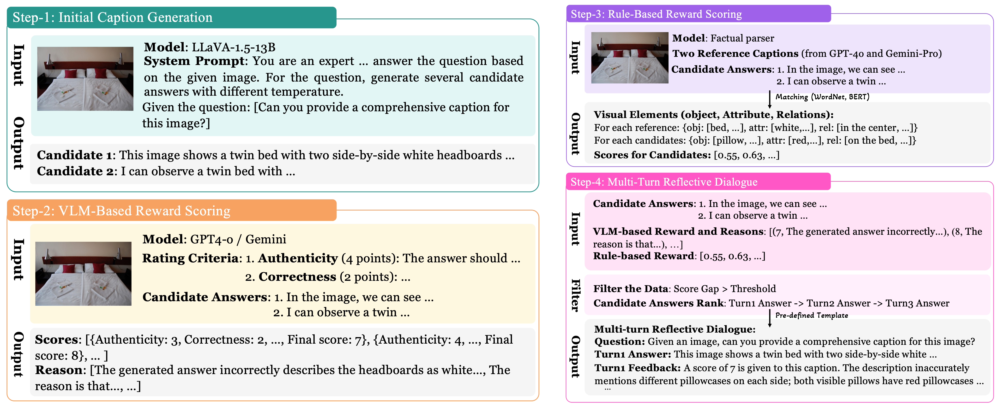
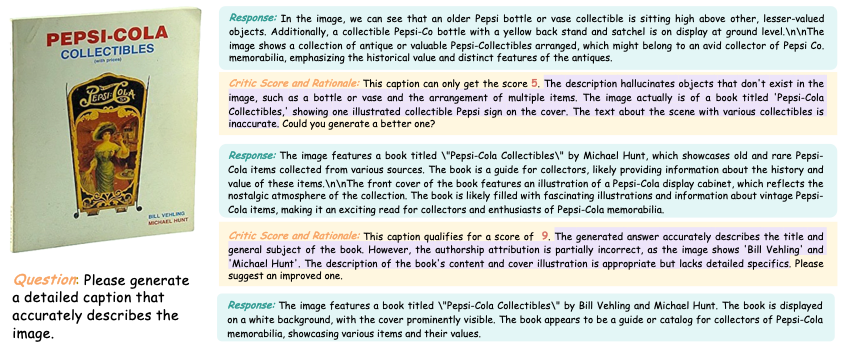
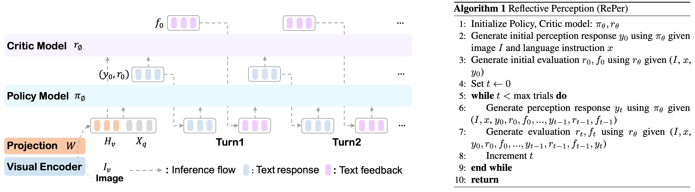
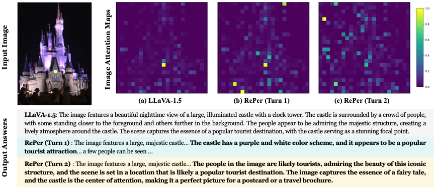
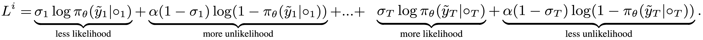

We present a perception in reflection paradigm designed to transcend the limitations of current large vision-language models (LVLMs), which are expected yet often fail to achieve perfect perception initially. Specifically, we propose Reflective Perception (RePer), a dual-model reflection mechanism that systematically alternates between policy and critic models, enables iterative refinement of visual perception. This framework is powered by Reflective Perceptual Learning (RPL), which reinforces intrinsic reflective capabilities through a methodically constructed visual reflection dataset and reflective unlikelihood training. Comprehensive experimental evaluation demonstrates RePer’s quantifiable improvements in image understanding, captioning precision, and hallucination reduction. Notably, RePer achieves strong alignment between model attention patterns and human visual focus, while RPL optimizes fine-grained and free-form preference alignment. These advancements establish perception in reflection as a robust paradigm for future multimodal agents, particularly in tasks requiring complex reasoning and multi-step manipulation.
Though existing works believe well-trained LVLMs can achieve sufficiently accurate initial perception, hallucinations and misperception are commonly observed. This work is inspired by the fact that human establish cognition through iterative observation.
A reasonable perception paradigm for LVLMs should be iterative rather than a single-pass.
Reflective Perceptual Learning (RPL):
(1) Builds a perception-feedback loop through a curated visual reflection dataset.
(2) Utilizes Reflective Unlikelihood Training to capture preferences and prevent behavioral collapse.
Reflective Perception:
Employs a policy-critic inference architecture that allows LVLMs to perform perception and reflection separately via multi-turn dialogues
1. RePer progressively shifts image attention toward human-aligned regions through iterative reflection, resulting in perceptual patterns that more closely mirror human focus.
2. Reflective Perceptual Learning serves as a free-form preference optimization that unifies various preference learning paradigms (DPO and LiPO), while enabling fine-grained supervision through explicit feedback signals.
3. RePer is an accurate and informative image captioner that significantly reduces hallucinations.
Visual Reflection Dataset Construction Pipeline and one data sample


1. Unlikelihood: Prevent the model from overfitting to multi-turn responses and avoid the behavioral collapse
2. Normalized rewards: Balance likelihood and unlikelihood.
A collaborative interaction between the well-trained policy and critic agents.



@misc{wei2025perceptionreflection,
title={Perception in Reflection},
author={Yana Wei and Liang Zhao and Kangheng Lin and En Yu and Yuang Peng and Runpei Dong and Jianjian Sun and Haoran Wei and Zheng Ge and Xiangyu Zhang and Vishal M. Patel},
year={2025},
eprint={2504.07165},
archivePrefix={arXiv},
primaryClass={cs.CV},
url={https://arxiv.org/abs/2504.07165},
}